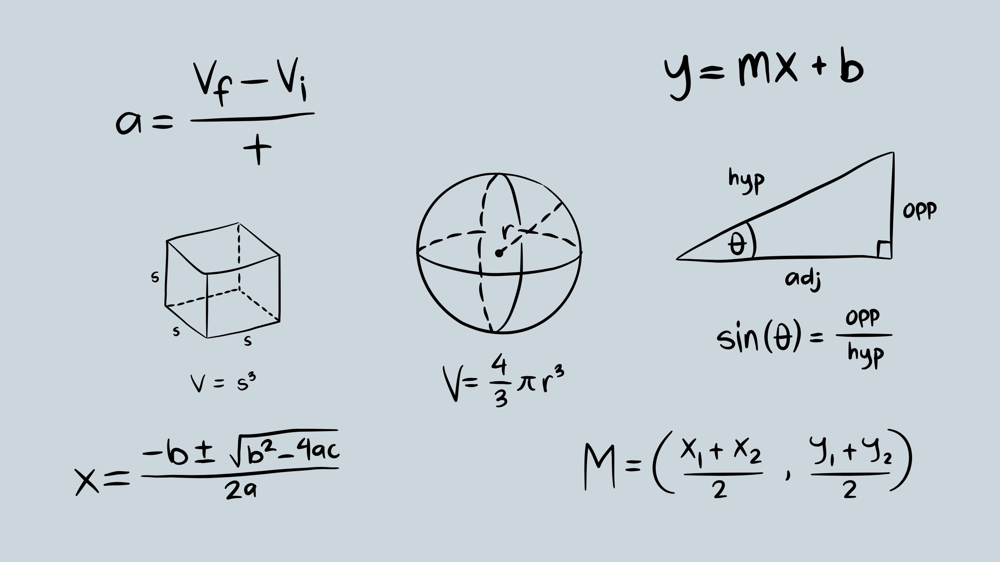

Machine learning is a new paradigm of doing science

Data! Data! Data! I cannot make bricks without clay. Sherlock Holmes
Scientific thinking is a crucial element in the development and advancement of all scientific fields. It serves as the foundation upon which progress is built, and is essential for the continued growth and expansion of human civilization. The scientific method, which involves the systematic observation, measurement, and experimentation of natural phenomena, is a key component of scientific thinking. It allows us to test hypotheses and theories, and gather evidence to support or refute them.
Personally, I find scientific and computational thinking to be incredibly intriguing and fascinating. The
ability to use code, algorithms, and data to solve complex problems is truly amazing. It allows us to understand
the world in new ways and to make predictions and discoveries that would otherwise be impossible.

With scientific thinking, we can understand the underlying mechanisms of natural phenomena and develop new technologies and innovations. Computational thinking, on the other hand, allows us to process and analyze large amounts of data, to automate repetitive tasks, and develop intelligent systems. Together, scientific and computational thinking provide us with powerful tools to understand, explain, and shape the world around us. It is this combination of knowledge and skills that truly excites me and drives my passion for learning and discovery.
In this blog, I will examine how the scientific method has evolved with the progress of science and technology and the stages it has gone through. I will also explore how the integration of computers, algorithms, and data has changed the way we solve problems, and how data-intensive science is providing new insights into the interconnectedness of the world. I will also discuss how these advancements have affected the way we view our understanding of the world around us.
1. Empirical science[1]

It emphasizes the importance of conducting experiments and collecting sensory evidence, which played a significant role in the development of applied sciences. Induction, the process of moving from specific observations to generalizations, greatly impacted experimental science and went beyond traditional formal logic. Scientists such as Galileo, George Berkeley, and John Locke are known for their contributions to empirical science.
2. Theoretical science
It relies on mathematical models to understand observable patterns and formulate elegant equations or hypotheses. The use of mathematical modeling has led to significant progress in science and scientific thinking. It involves reducing complex problems into mathematical equations that can be manipulated using logical-mathematical operations and converted from one form to another using algebraic equations.
Mathematics is widely recognized as the most precise model developed by mankind. Examples of the power of mathematical modeling include logic, deduction, mathematical induction, statistical hypotheses, algebraic equations, implicit equations, and differential equations. Scientists such as Kepler and Einstein are known for their contributions to theoretical science.
3. Computational science
It utilizes computers to perform experiments and simulations using mathematical equations. It enables the simulation of complex phenomena and reduces the cost of experiments.
The development of mathematics in the 20th century played a significant role in the emergence of computers. Semiconductors relied on mathematical representation to develop logic gates based on the rules of logic and Boolean algebra. Algebra was also used in the development of relational databases, which contributed to faster data storage and retrieval and the creation of interactive systems.
Computers are a major advancement in scientific technology as they allow for faster data analysis and mathematical/statistical analysis compared to manual methods. They also allow for the running of simulations, sharing of information, and collaboration among researchers.
4. Data-intensive science (eScience)
It is a branch of science that relies heavily on data and computation resources. This approach has been gaining popularity in recent years due to the availability of large amounts of data and advancements in machine learning and artificial intelligence.
There is an ongoing debate among researchers about the importance of having more data or more intelligent algorithms. However, it is clear that data is crucial in solving scientific and social problems, and it is becoming increasingly accessible and collectible. The use of big data and machine learning techniques, such as deep learning and reinforcement learning, has the potential to revolutionize natural science, applied science, and social science research.”
AI is the 21st-century telescope and data is the lens of this telescope. Just as telescopes have enabled us to look into the wider universe, AI will enable us to solve countless problems and It is going to be an essential factor in any scientific development or breakthrough that will occur in the future. AI and data-intensive science will expand our view of the world and ourselves, and make our world a better place.
Data is not just a collection of bits and bytes, it has become a valuable asset for many companies. The abundance of data in today’s world has led to the rise of data-driven businesses such as Facebook, Google, and Tesla, which have built their success on the ability to collect, analyze, and utilize large amounts of data. These companies are valued in trillions of dollars, highlighting the importance of data in today’s economy.
AI and Machine learning in Scientific Discovery
As we continue to make progress in the field of artificial intelligence (AI), we are moving closer to creating systems that can perform at a human-level of intelligence, known as Artificial General Intelligence (AGI). With the ability to engineer intelligence, we can use these systems to solve a wide range of problems and advance science for the benefit of humanity.
Applications of AI in scientific discovery include drug discovery, understanding complex organic chemistry and molecular interactions, space exploration, proving mathematical formulas, medical diagnosis, personalized healthcare, disease prevention, disaster prevention, and climate change. A notable example of this is the AlphaFold project at DeepMind, which has already made significant strides in this area and we can expect to see continued progress in the coming years.
AI and machine learning apps in social science
GDL Course, slide1 by Michael M. Bronstein
AI and machine learning methods are also being applied in social science to study and understand human behavior and societal issues. The use of big data and machine learning techniques allows for more experiments and detailed analysis of social data, giving researchers new insights into human behavior.
However, the use of data in social science also raises ethical concerns, such as the misuse of data to manipulate public opinion or target minority groups. It is important to ensure that data is used responsibly and that AI models are developed in an unbiased, fair, and diverse manner to avoid perpetuating societal inequalities.
The next Freud will be a data scientist. The next Marx will be a data scientist. The next Salk might very well be a data scientist. by Seth Stephens-Davidowitz
In summary, scientific thinking and methodology have evolved over time with the progress of science and technology. Empirical science, theoretical science, and computational science have all played important roles in advancing our understanding of the world and solving complex problems. Data-intensive science, also known as eScience, is the latest development in this field, utilizing large amounts of data and powerful computational resources to make new discoveries and solve problems in a variety of fields.
Machine learning science is here to stay as long as there is data. It is not just a tool in our toolkit, but rather a new paradigm that transforms the way we live, work, create science and understand ourselves. I believe that we will see significant scientific breakthroughs in the coming years, and we are fortunate to be living in a time where we can contribute or at least try to do so.
References:
1- The Fourth Paradigm: Data-Intensive Scientific Discovery by TonnyHey
Stewart Tansley, Kristin Tolle, Jim Gray